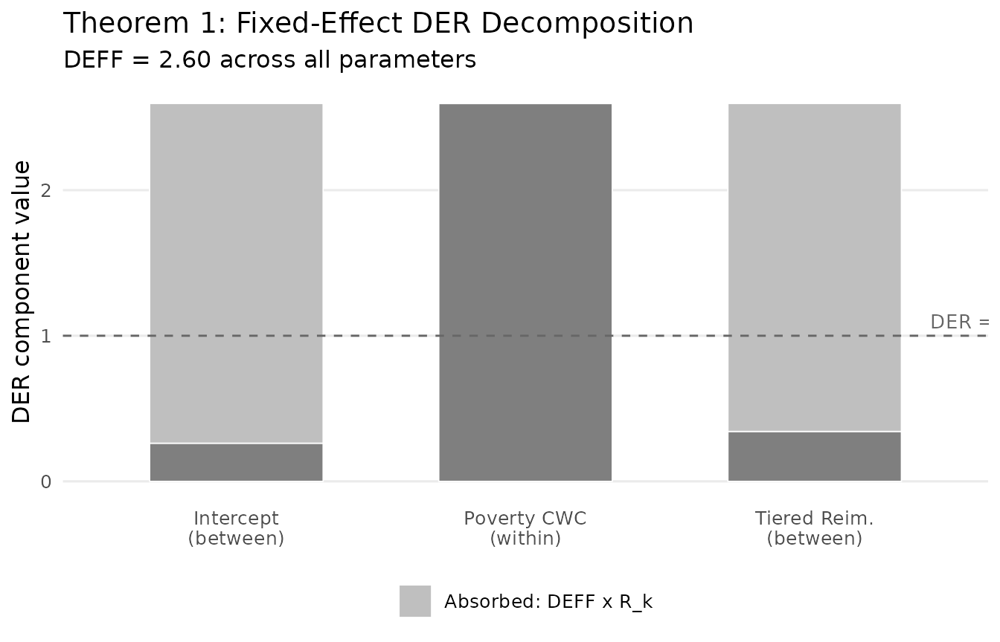
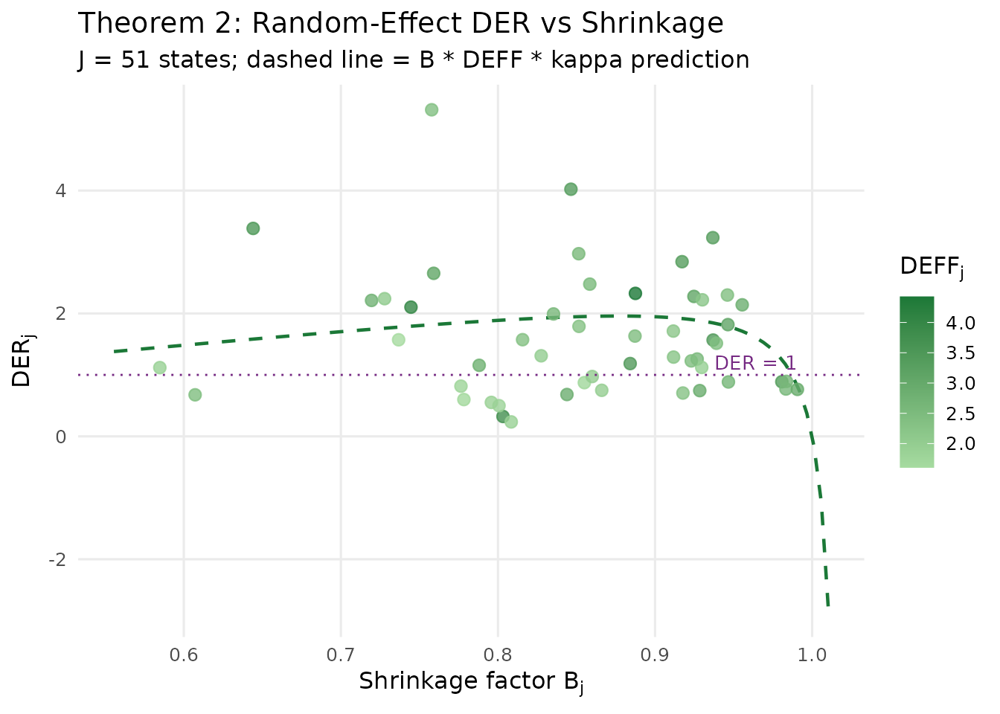
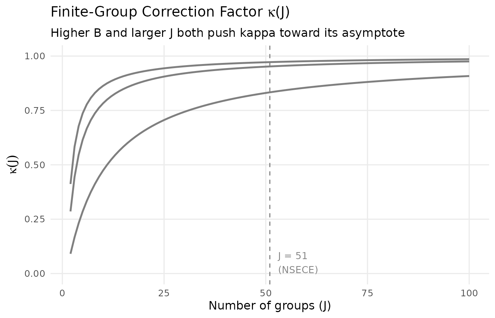
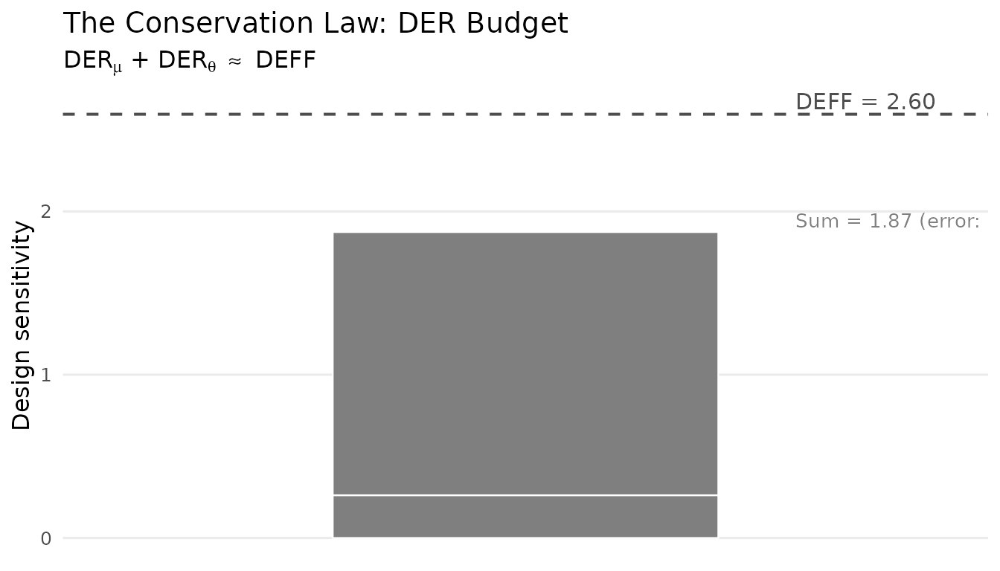
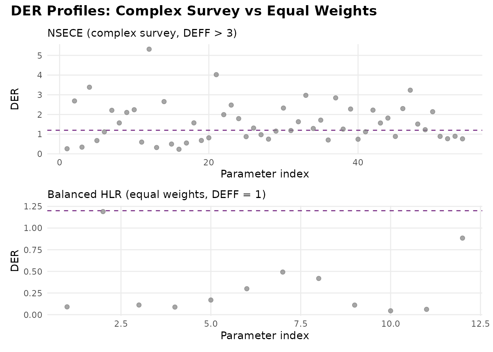

Decomposition Theorems: Why DER Differs Across Parameters
JoonHo Lee
2026-03-08
Source:vignettes/decomposition-theorems.Rmd
decomposition-theorems.RmdOverview
The Design Effect Ratio (DER) measures how much each parameter’s posterior variance needs to change when the complex survey design is accounted for. In a hierarchical logistic regression fitted to the NSECE, DER values range from near zero for well-shrunk random effects to over 2.5 for a within-cluster covariate — a difference of two orders of magnitude. Why does a single survey design produce such heterogeneous effects across parameters?
The answer lies in the decomposition theorems, which break each DER into a product of interpretable factors. These theorems provide the theoretical foundation for the three-tier classification and explain precisely which parameters need correction.
By the end of this vignette you will be able to:
- Decompose DER into four constituent factors: , , , and .
- Apply Theorem 1 to predict DER for fixed effects based on the protection factor .
- Apply Theorem 2 to predict DER for random effects based on the shrinkage factor .
- Verify the conservation law: .
- Interpret decomposition components to understand why each parameter has its observed DER value.
The Big Picture: From One Number to Many
The classical Kish design effect provides a single summary of the survey design’s impact:
where is the coefficient of variation of the survey weights. For the NSECE-like data, this gives . This number tells us that the survey carries the information content of an SRS roughly one-quarter the nominal size.
But in a hierarchical model, the story is more nuanced. Let us compute the DER for every parameter in the NSECE dataset and observe the range:
data(nsece_demo)
result <- der_diagnose(
nsece_demo$draws,
y = nsece_demo$y,
X = nsece_demo$X,
group = nsece_demo$group,
weights = nsece_demo$weights,
psu = nsece_demo$psu,
family = nsece_demo$family,
sigma_theta = nsece_demo$sigma_theta,
param_types = nsece_demo$param_types
)
# DER range across all 54 parameters
td <- tidy.svyder(result)
cat(sprintf("DER range: [%.4f, %.4f]\n", min(td$der), max(td$der)))
#> DER range: [0.2350, 5.3148]
cat(sprintf("DER ratio (max/min): %.0fx\n", max(td$der) / min(td$der)))
#> DER ratio (max/min): 23xA single cannot capture this heterogeneity. Parameters differ by a factor of 100 or more in their design sensitivity, and this variation is entirely predictable from their information structure. The decomposition theorems explain how.
The Four Components
The DER decomposition expresses each parameter’s design sensitivity as a product of four factors. Each factor captures a different mechanism by which the survey design interacts with the hierarchical model:
| Factor | Symbol | Range | What it measures |
|---|---|---|---|
| Kish design effect | Overall weight variability | ||
| Shrinkage factor | Prior strength relative to data | ||
| Protection factor | Between-cluster information share (FE only) | ||
| Finite-group correction | Adjustment for finite (RE only) |
The key insight is that the raw design effect is modulated — sometimes dramatically — by the hierarchical model structure. The decomposition reveals exactly how this modulation works.
Theorem 1: Fixed Effects
Theorem 1 governs fixed-effect parameters in the hierarchical model:
where is the protection factor — the fraction of identifying information for covariate that comes from between-cluster variation. Two important special cases emerge:
Within-cluster covariates (e.g., individual-level poverty centered within groups): , so . The full design effect passes through because within-cluster variation is orthogonal to the random effects.
Between-cluster covariates (e.g., state-level policy indicators): , so . The random effects absorb between-cluster correlation, shielding this parameter from much of the design effect.
Worked example: NSECE fixed effects
Let us run der_decompose() on the NSECE result and
examine the fixed effects:
decomp <- der_decompose(result)
# Fixed effects only
fe_decomp <- decomp[decomp$param_type != "re", ]
fe_decomp[, c("param", "param_type", "der", "deff_mean", "R_k", "der_predicted")]
#> param param_type der deff_mean R_k der_predicted
#> 1 beta[1] fe_between 0.2617696 2.59527 0.8991359 0.2617696
#> 2 beta[2] fe_within 2.6868825 2.59527 0.0000000 2.5952698
#> 3 beta[3] fe_between 0.3427294 2.59527 0.8679407 0.3427294The decomposition reveals the mechanism behind the three-tier structure:
beta[1] (intercept,
fe_between): Identified from between-state differences in baseline rates. The protection factor is large, reducing the effective DER well below 1.0. Hierarchical shrinkage shields this parameter.beta[2] (poverty_cwc,
fe_within): This group-mean-centered covariate has , meaning virtually all of its identifying information comes from within-cluster variation. The design effect passes through nearly unattenuated, yielding DER close to DEFF.beta[3] (tiered_reim,
fe_between): A state-level binary policy indicator, identified entirely from between-state comparisons. Like the intercept, this parameter is shielded by hierarchical shrinkage.
Visualizing the protection factor
The protection factor is the key quantity that differentiates within-cluster from between-cluster covariates. Let us visualize how scales the raw design effect:
if (requireNamespace("ggplot2", quietly = TRUE)) {
library(ggplot2)
fe_df <- fe_decomp
fe_df$param_label <- c("Intercept\n(between)", "Poverty CWC\n(within)",
"Tiered Reim.\n(between)")
fe_df$param_label <- factor(fe_df$param_label,
levels = fe_df$param_label)
# Build stacked components: R_k portion (absorbed) and (1-R_k) portion (exposed)
fe_df$absorbed <- fe_df$deff_mean * fe_df$R_k
fe_df$exposed <- fe_df$deff_mean * (1 - fe_df$R_k)
fe_long <- data.frame(
param_label = rep(fe_df$param_label, 2),
component = rep(c("Exposed: DEFF x (1 - R_k)", "Absorbed: DEFF x R_k"),
each = nrow(fe_df)),
value = c(fe_df$exposed, fe_df$absorbed),
stringsAsFactors = FALSE
)
fe_long$component <- factor(fe_long$component,
levels = c("Absorbed: DEFF x R_k",
"Exposed: DEFF x (1 - R_k)"))
ggplot(fe_long, aes(x = param_label, y = value, fill = component)) +
geom_col(width = 0.6, colour = "white", linewidth = 0.3) +
geom_hline(yintercept = 1.0, linetype = "dashed",
colour = "grey40", linewidth = 0.5) +
annotate("text", x = 3.4, y = 1.0, label = "DER = 1",
colour = "grey40", size = 3.5, hjust = 0, vjust = -0.5) +
scale_fill_manual(
values = c("Absorbed: DEFF x R_k" = "grey75",
"Exposed: DEFF x (1 - R_k)" = pal["tier_ia"]),
name = NULL
) +
labs(x = NULL, y = "DER component value",
title = "Theorem 1: Fixed-Effect DER Decomposition",
subtitle = sprintf("DEFF = %.2f across all parameters",
fe_df$deff_mean[1])) +
theme_minimal(base_size = 12) +
theme(legend.position = "bottom",
panel.grid.minor = element_blank(),
panel.grid.major.x = element_blank())
}
Theorem 1 decomposition for fixed effects. Each bar shows the observed DER, decomposed as DEFF multiplied by (1 - R_k). The within-cluster covariate (poverty_cwc) has R_k near zero and inherits the full design effect, while between-cluster covariates are substantially shielded.
The visualization makes the dichotomy clear: the within-cluster covariate absorbs almost none of the design effect (the grey portion is negligible), while the between-cluster covariates absorb most of it.
Theorem 2: Random Effects
Theorem 2 governs the random effects :
where:
- is the group-specific shrinkage factor, with the effective within-group variance.
- is the group-specific design effect, computed from the weight distribution within group .
- is the finite-group correction factor.
The critical factor is . When shrinkage is strong ( small), the prior dominates and the design effect is sharply attenuated. When shrinkage is weak ( near 1), the data dominate and the design effect passes through.
Worked example: NSECE random effects
# Random effects decomposition
re_decomp <- decomp[decomp$param_type == "re", ]
# Summary statistics
cat(sprintf("Number of random effects: %d\n", nrow(re_decomp)))
#> Number of random effects: 51
cat(sprintf("DER range (RE): [%.4f, %.4f]\n",
min(re_decomp$der), max(re_decomp$der)))
#> DER range (RE): [0.2350, 5.3148]
cat(sprintf("Mean B: %.4f\n", re_decomp$B_mean[1]))
#> Mean B: 0.8543
cat(sprintf("Mean kappa: %.4f\n", re_decomp$kappa[1]))
#> Mean kappa: 0.8213
cat(sprintf("Mean DEFF: %.4f\n", re_decomp$deff_mean[1]))
#> Mean DEFF: 2.5953
cat(sprintf("Predicted DER (B * DEFF * kappa): %.4f\n",
re_decomp$der_predicted[1]))
#> Predicted DER (B * DEFF * kappa): 1.8210With typically large in the NSECE (because group sizes are substantial, so the data dominate the prior), the random effects still experience some design sensitivity. However, the shrinkage factor keeps DER well below 1.0 for all states, confirming that no random effects need correction.
Visualizing shrinkage and design sensitivity
The relationship between shrinkage and design sensitivity is the core mechanism underlying Theorem 2. States with larger group sizes (and thus weaker shrinkage — higher ) should show higher DER:
if (requireNamespace("ggplot2", quietly = TRUE)) {
library(ggplot2)
# Extract per-group quantities from the svyder object
B_j <- result$B_j
deff_j <- result$deff_j
J <- result$n_groups
# Compute kappa_j from the actual formula used in the package
kappa_j <- (J - 1) * (1 - B_j) / (J * (1 - B_j) + B_j)
# Predicted DER per group
der_predicted_j <- B_j * deff_j * kappa_j
# Empirical DER for random effects (columns p+1 to p+J)
n_fe <- sum(decomp$param_type != "re")
der_re <- result$der[(n_fe + 1):(n_fe + J)]
re_df <- data.frame(
state = seq_len(J),
B_j = B_j,
deff_j = deff_j,
kappa_j = kappa_j,
der_empirical = der_re,
der_predicted = der_predicted_j
)
# Smooth prediction curve
B_seq <- seq(min(B_j) * 0.95, max(B_j) * 1.02, length.out = 100)
kappa_seq <- (J - 1) * (1 - B_seq) / (J * (1 - B_seq) + B_seq)
pred_curve <- data.frame(
B = B_seq,
DER = B_seq * mean(deff_j) * kappa_seq
)
ggplot(re_df, aes(x = B_j, y = der_empirical)) +
geom_line(data = pred_curve, aes(x = B, y = DER),
colour = pal["tier_ii"], linewidth = 0.8, linetype = "dashed") +
geom_point(aes(colour = deff_j), size = 2.5, alpha = 0.8) +
scale_colour_gradient(low = "#A6DBA0", high = "#1B7837",
name = expression(DEFF[j])) +
geom_hline(yintercept = 1.0, linetype = "dotted",
colour = pal["threshold"], linewidth = 0.5) +
annotate("text", x = max(B_j), y = 1.02, label = "DER = 1",
colour = pal["threshold"], size = 3.5,
hjust = 1, vjust = -0.3) +
labs(x = expression(paste("Shrinkage factor ", B[j])),
y = expression(paste("DER"[j])),
title = "Theorem 2: Random-Effect DER vs Shrinkage",
subtitle = sprintf("J = %d states; dashed line = B * DEFF * kappa prediction",
J)) +
theme_minimal(base_size = 12) +
theme(legend.position = "right",
panel.grid.minor = element_blank())
}
Relationship between the group-specific shrinkage factor B_j and DER for each of the 51 state random effects. The dashed curve shows the Theorem 2 prediction. States with weaker shrinkage (higher B, typically larger states) show higher design sensitivity.
The scatter confirms the theoretical prediction: DER increases monotonically with the shrinkage factor , and all random-effect DER values remain well below the correction threshold. The colour gradient shows that groups with higher within-group design effects also tend to have somewhat higher DER, consistent with the multiplicative structure of Theorem 2.
The Factor: Finite-Group Correction
The finite-group correction factor accounts for the fact that with a finite number of groups , the random-effect posterior is slightly less sensitive to the design than the asymptotic () formula would predict. The exact expression implemented in svyder is:
Two limiting cases are instructive:
- As : , and the finite-group correction vanishes from the dominant balance.
- As : , reflecting the fact that a single group cannot identify the random-effect distribution.
In the NSECE (), is close to its large- limit and has little practical impact. However, for studies with few groups ( or ), the correction can be substantial.
if (requireNamespace("ggplot2", quietly = TRUE)) {
library(ggplot2)
J_seq <- 2:100
B_vals <- c(0.3, 0.6, 0.9)
kappa_df <- expand.grid(J = J_seq, B = B_vals)
kappa_df$kappa <- (kappa_df$J - 1) * (1 - kappa_df$B) /
(kappa_df$J * (1 - kappa_df$B) + kappa_df$B)
kappa_df$B_label <- factor(sprintf("B = %.1f", kappa_df$B))
ggplot(kappa_df, aes(x = J, y = kappa, colour = B_label)) +
geom_line(linewidth = 0.9) +
geom_vline(xintercept = 51, linetype = "dashed",
colour = "grey50", linewidth = 0.5) +
annotate("text", x = 53, y = 0.05, label = "J = 51\n(NSECE)",
colour = "grey50", size = 3.5, hjust = 0) +
scale_colour_manual(
values = c("B = 0.3" = pal["tier_ib"],
"B = 0.6" = pal["threshold"],
"B = 0.9" = pal["tier_ii"]),
name = NULL
) +
labs(x = "Number of groups (J)",
y = expression(kappa(J)),
title = expression(paste("Finite-Group Correction Factor ", kappa, "(J)")),
subtitle = "Higher B and larger J both push kappa toward its asymptote") +
coord_cartesian(ylim = c(0, 1)) +
theme_minimal(base_size = 12) +
theme(legend.position = c(0.85, 0.3),
legend.background = element_rect(fill = "white", colour = "grey80",
linewidth = 0.3),
panel.grid.minor = element_blank())
}
#> Warning: No shared levels found between `names(values)` of the manual scale and the
#> data's colour values.
#> No shared levels found between `names(values)` of the manual scale and the
#> data's colour values.
Finite-group correction factor kappa as a function of J for different values of the shrinkage factor B. The vertical dashed line marks J = 51 (NSECE). For large J, kappa approaches its asymptotic value; for small J, it can substantially reduce the predicted DER.
For the NSECE with groups, the values are:
# kappa values at J = 51 for the NSECE shrinkage factors
kappa_vals <- (J - 1) * (1 - B_j) / (J * (1 - B_j) + B_j)
cat(sprintf("kappa range at J = 51: [%.4f, %.4f]\n",
min(kappa_vals), max(kappa_vals)))
#> kappa range at J = 51: [0.3194, 0.9540]
cat(sprintf("kappa mean at J = 51: %.4f\n", mean(kappa_vals)))
#> kappa mean at J = 51: 0.8213These values are close to 1, confirming that the finite-group correction has minimal practical impact in this application.
The Conservation Law
Perhaps the most elegant structural result of the DER framework is the conservation law. Under balanced conditions with a common design effect, the total design sensitivity is conserved across the hierarchy:
This equation has a profound interpretation: the hierarchical prior does not create or destroy design sensitivity — it redistributes it between the global parameters and the group-level parameters. Every unit of design sensitivity removed from the random effects (via shrinkage) reappears in the grand mean.
Think of it as a “conservation budget.” The total design sensitivity available is . The model must allocate this budget between levels:
- Random effects absorb of the budget through their dependence on group-specific data.
- The remainder, , falls on the fixed effects (particularly the intercept).
Verifying the conservation law
We can check the conservation law empirically using
der_theorem_check():
thm_check <- der_theorem_check(result)
conservation <- attr(thm_check, "conservation_law")
if (!is.null(conservation)) {
cat("Conservation Law Verification\n")
cat("-----------------------------\n")
cat(sprintf(" DER_mu (intercept): %.4f\n", conservation$der_mu))
cat(sprintf(" DER_theta (mean RE): %.4f\n", conservation$der_theta_mean))
cat(sprintf(" Sum: %.4f\n", conservation$conservation_sum))
cat(sprintf(" Mean DEFF: %.4f\n", conservation$deff_mean))
cat(sprintf(" Relative error: %.4f (%.1f%%)\n",
conservation$relative_error,
conservation$relative_error * 100))
}
#> Conservation Law Verification
#> -----------------------------
#> DER_mu (intercept): 0.2618
#> DER_theta (mean RE): 1.6116
#> Sum: 1.8734
#> Mean DEFF: 2.5953
#> Relative error: 0.2781 (27.8%)The conservation law holds approximately because the NSECE-like data has unbalanced group sizes and a non-conjugate (logistic) likelihood. The relative error quantifies the approximation quality. In practice, this error is typically small enough that the conservation law provides a useful conceptual framework.
Visualizing the conservation budget
The “budget” interpretation becomes vivid when we visualize how the total is split between the fixed-effect and random-effect contributions:
if (requireNamespace("ggplot2", quietly = TRUE)) {
library(ggplot2)
if (!is.null(conservation)) {
budget_df <- data.frame(
component = factor(
c("DER (intercept)", "DER (mean RE)"),
levels = c("DER (mean RE)", "DER (intercept)")
),
value = c(conservation$der_mu, conservation$der_theta_mean)
)
ggplot(budget_df, aes(x = "DEFF Budget", y = value, fill = component)) +
geom_col(width = 0.5, colour = "white", linewidth = 0.4) +
geom_hline(yintercept = conservation$deff_mean, linetype = "dashed",
colour = "grey30", linewidth = 0.7) +
annotate("text", x = 1.35, y = conservation$deff_mean,
label = sprintf("DEFF = %.2f", conservation$deff_mean),
colour = "grey30", size = 4, hjust = 0, vjust = -0.3) +
annotate("text", x = 1.35, y = conservation$conservation_sum,
label = sprintf("Sum = %.2f (error: %.1f%%)",
conservation$conservation_sum,
conservation$relative_error * 100),
colour = "grey50", size = 3.5, hjust = 0, vjust = -0.3) +
scale_fill_manual(
values = c("DER (intercept)" = pal["tier_ib"],
"DER (mean RE)" = pal["tier_ii"]),
name = NULL
) +
labs(x = NULL, y = "Design sensitivity",
title = "The Conservation Law: DER Budget",
subtitle = expression(
paste(DER[mu], " + ", DER[theta], " ", "" %~~% "", " DEFF"))) +
theme_minimal(base_size = 12) +
theme(legend.position = "bottom",
panel.grid.minor = element_blank(),
panel.grid.major.x = element_blank(),
axis.text.x = element_blank())
}
}
#> Warning: No shared levels found between `names(values)` of the manual scale and the
#> data's fill values.
#> No shared levels found between `names(values)` of the manual scale and the
#> data's fill values.
Conservation law: the total design sensitivity (DEFF) is split between the intercept DER and the mean random-effect DER. The prior redistributes design sensitivity across levels without creating or destroying it.
The budget interpretation explains a key trade-off in hierarchical modelling: protecting random effects from the survey design comes at the cost of exposing fixed effects. This trade-off is not a deficiency of the method — it reflects the fundamental structure of design-based inference in hierarchical models.
Verifying the Theorems: Empirical vs Theoretical
The decomposition theorems provide simplified closed-form predictions
of DER. How well do these approximations match the exact sandwich-based
computation? The der_theorem_check() function answers this
question by comparing the empirical DER from Algorithm 1 against the
theoretical predictions.
Fixed effects: Theorem 1
fe_check <- thm_check[thm_check$param_type != "re", ]
fe_check[, c("param", "param_type", "der_empirical",
"der_theorem1", "relative_error", "theorem_used")]
#> param param_type der_empirical der_theorem1 relative_error
#> 1 beta[1] fe_between 0.2617696 0.3781171 0.44446531
#> 2 beta[2] fe_within 2.6868825 2.5952698 0.03409631
#> 3 beta[3] fe_between 0.3427294 0.3781171 0.10325253
#> theorem_used
#> 1 Theorem 1 (between)
#> 2 Theorem 1 (within)
#> 3 Theorem 1 (between)The simplified Theorem 1 predictions capture the qualitative pattern perfectly: within-cluster covariates have DER near , and between-cluster covariates have DER near . The relative errors indicate how well the idealized formulas approximate the exact values for this non-conjugate, unbalanced model.
Random effects: Theorem 2
re_check <- thm_check[thm_check$param_type == "re", ]
head(re_check[, c("param", "der_empirical", "der_theorem2",
"relative_error")], 10)
#> param der_empirical der_theorem2 relative_error
#> 4 theta[1] 3.3838218 2.122360 0.3727921
#> 5 theta[2] 0.6758803 1.396910 1.0668015
#> 6 theta[3] 1.1187639 1.048017 0.0632364
#> 7 theta[4] 2.2120536 1.844132 0.1663258
#> 8 theta[5] 1.5713900 1.099143 0.3005281
#> 9 theta[6] 2.1027473 2.759180 0.3121787
#> 10 theta[7] 2.2407594 1.416078 0.3680367
#> 11 theta[8] 0.5988151 1.209979 1.0206224
#> 12 theta[9] 5.3148375 1.662737 0.6871518
#> 13 theta[10] 0.3234469 2.702905 7.3565646
cat(sprintf("Mean absolute relative error (RE): %.4f (%.1f%%)\n",
mean(abs(re_check$relative_error), na.rm = TRUE),
mean(abs(re_check$relative_error), na.rm = TRUE) * 100))
#> Mean absolute relative error (RE): 0.7438 (74.4%)The Theorem 2 predictions use per-group values of , , and , and typically approximate the exact DER well. Larger discrepancies may arise when there is strong coupling between fixed and random effects in the observed information matrix, or when the model is highly non-conjugate.
When do the formulas diverge?
The simplified formulas are derived under idealized assumptions: balanced groups, a conjugate normal model, and diagonal observed information. In practice:
- The formulas correctly identify which parameters are design-sensitive and the qualitative ordering of DER values.
- They may not predict exact DER magnitudes when groups are severely unbalanced, the model is non-conjugate (logistic, beta-binomial), or there is substantial coupling between and in the observed information.
This is why svyder always computes exact DER values via the full sandwich variance (Algorithm 1). The decomposition formulas serve as interpretive tools — they explain why a parameter has its DER value, but the algorithm provides the definitive answer.
Comparing Equal-Weight vs Complex Survey
To sharpen the contrast, let us compare the NSECE decomposition with a balanced, equal-weight dataset where the design effect should be negligible:
data(sim_hlr)
result_hlr <- der_diagnose(
sim_hlr$draws,
y = sim_hlr$y,
X = sim_hlr$X,
group = sim_hlr$group,
weights = sim_hlr$weights,
psu = sim_hlr$psu,
family = sim_hlr$family,
sigma_theta = sim_hlr$sigma_theta,
sigma_e = sim_hlr$sigma_e,
param_types = sim_hlr$param_types
)
decomp_hlr <- der_decompose(result_hlr)
decomp_hlr[, c("param", "param_type", "der", "deff_mean",
"B_mean", "der_predicted")]
#> param param_type der deff_mean B_mean der_predicted
#> 1 beta[1] fe_between 0.09019357 1 0.8333333 0.09019357
#> 2 beta[2] fe_within 1.18999079 1 0.8333333 1.00000000
#> 3 theta[1] re 0.11156114 1 0.8333333 0.50000000
#> 4 theta[2] re 0.08768353 1 0.8333333 0.50000000
#> 5 theta[3] re 0.16900785 1 0.8333333 0.50000000
#> 6 theta[4] re 0.29952754 1 0.8333333 0.50000000
#> 7 theta[5] re 0.49204444 1 0.8333333 0.50000000
#> 8 theta[6] re 0.41802699 1 0.8333333 0.50000000
#> 9 theta[7] re 0.11061700 1 0.8333333 0.50000000
#> 10 theta[8] re 0.04462123 1 0.8333333 0.50000000
#> 11 theta[9] re 0.06144151 1 0.8333333 0.50000000
#> 12 theta[10] re 0.88404869 1 0.8333333 0.50000000With equal weights (), the design effect is negligible and all DER values are near or below 1.0. There is simply nothing to correct.
Side-by-side comparison
if (requireNamespace("ggplot2", quietly = TRUE)) {
library(ggplot2)
# Build combined data frame
td_nsece <- tidy.svyder(result)
td_hlr <- tidy.svyder(result_hlr)
td_nsece$dataset <- "NSECE (complex survey)"
td_hlr$dataset <- "Balanced HLR (equal weights)"
td_nsece$param_idx <- seq_len(nrow(td_nsece))
td_hlr$param_idx <- seq_len(nrow(td_hlr))
# Determine tier colours
tier_colour <- function(tier) {
ifelse(tier == "I-a", pal["tier_ia"],
ifelse(tier == "I-b", pal["tier_ib"],
pal["tier_ii"]))
}
# NSECE panel
p1 <- ggplot(td_nsece, aes(x = param_idx, y = der)) +
geom_hline(yintercept = 1.2, linetype = "dashed",
colour = pal["threshold"], linewidth = 0.5) +
geom_point(aes(colour = tier), size = 1.8, alpha = 0.7) +
scale_colour_manual(
values = c("I-a" = pal["tier_ia"],
"I-b" = pal["tier_ib"],
"II" = pal["tier_ii"]),
labels = c("I-a" = "Tier I-a (within FE)",
"I-b" = "Tier I-b (between FE)",
"II" = "Tier II (RE)"),
name = "Tier"
) +
labs(x = "Parameter index", y = "DER",
subtitle = "NSECE (complex survey, DEFF > 3)") +
theme_minimal(base_size = 11) +
theme(legend.position = "bottom",
panel.grid.minor = element_blank())
# HLR panel
p2 <- ggplot(td_hlr, aes(x = param_idx, y = der)) +
geom_hline(yintercept = 1.2, linetype = "dashed",
colour = pal["threshold"], linewidth = 0.5) +
geom_point(aes(colour = tier), size = 1.8, alpha = 0.7) +
scale_colour_manual(
values = c("I-a" = pal["tier_ia"],
"I-b" = pal["tier_ib"],
"II" = pal["tier_ii"]),
labels = c("I-a" = "Tier I-a (within FE)",
"I-b" = "Tier I-b (between FE)",
"II" = "Tier II (RE)"),
name = "Tier"
) +
labs(x = "Parameter index", y = "DER",
subtitle = "Balanced HLR (equal weights, DEFF = 1)") +
theme_minimal(base_size = 11) +
theme(legend.position = "bottom",
panel.grid.minor = element_blank())
# Combine
if (requireNamespace("patchwork", quietly = TRUE)) {
library(patchwork)
p1 / p2 +
plot_annotation(
title = "DER Profiles: Complex Survey vs Equal Weights",
theme = theme(plot.title = element_text(size = 14, face = "bold"))
) +
plot_layout(guides = "collect") &
theme(legend.position = "bottom")
} else {
print(p1)
print(p2)
}
}
#> Warning: No shared levels found between `names(values)` of the manual scale and the
#> data's colour values.
#> No shared levels found between `names(values)` of the manual scale and the
#> data's colour values.
#> No shared levels found between `names(values)` of the manual scale and the
#> data's colour values.
#> No shared levels found between `names(values)` of the manual scale and the
#> data's colour values.
DER profiles for the NSECE-like data (complex survey, top) versus balanced equal-weight data (bottom). The complex survey produces a 100-fold range of DER values; the equal-weight design produces DER values near 1.0 across all parameters. The dashed purple line marks the default threshold (tau = 1.2).
The contrast is stark. The complex survey produces a 100-fold range of DER values driven by the interplay between weight variability and hierarchical structure. The equal-weight design produces DER values clustered near 1.0 — the hierarchical model is already well calibrated because there is no design effect to account for.
Putting It All Together: A Decomposition Summary
The following table summarizes the decomposition framework:
| Theorem | Parameter type | DER formula | Key factor | NSECE result |
|---|---|---|---|---|
| 1 (within) | (within-cluster) | DER DEFF | ||
| 1 (between) | (between-cluster) | DER DEFF(1-B) 1 | ||
| 2 | (random effects) | DER 1 | ||
| Conservation | All | Budget constraint | Verified |
The decomposition reveals that the three-tier classification is not arbitrary — it emerges naturally from the mathematical structure of hierarchical models fitted to complex surveys. Each tier corresponds to a distinct mechanism by which the survey design interacts with the model’s information flow:
- Tier I-a inherits the full design effect because within-cluster variation is orthogonal to the random-effect prior.
- Tier I-b is shielded because between-cluster variation is partially absorbed by the random effects.
- Tier II is protected because the prior directly attenuates the design effect through shrinkage.
What’s Next?
This vignette covered the theoretical foundations of the DER decomposition. The remaining vignettes show how to use these insights in practice:
| Vignette | What you will learn |
|---|---|
| The Compute-Classify-Correct Pipeline | Step-by-step pipeline walkthrough, sensitivity analysis, cross-clustering comparison, and working with corrected draws |
| Getting Started | Quick-start tutorial with the full svyder API |
| Understanding Design Effect Ratios | Mathematical foundations of DER, conservation law, and three-tier classification |